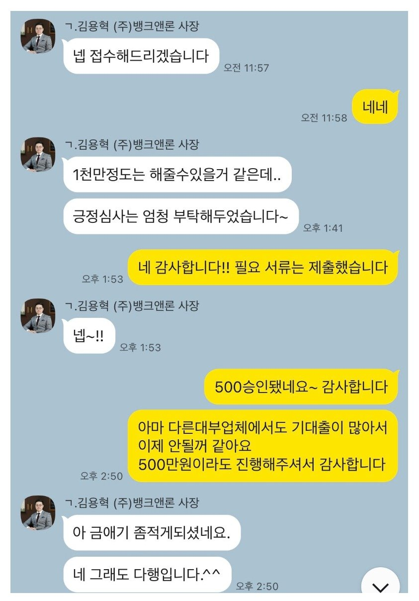

[개인회생자대출 ] 회생면책1년이상, 기대출과다조건에서 승인. 김용혁 사장님 감사합니다!!

재직형태 : 4대보험 직장인
재직기간 : 8년차
소득 : 소득 6000만
신용등급 : 7등급
채무 : 대부 2950만원
회생 면책자로 면책된지 1년이지난 상태에서 대출 실행했습니다.
채무금이 상대적으로 많아서 대출이 어려울줄 알았는데
김용혁이사님, 이현섭 과장님의 도움으로 대출 잘 진행했습니다. 당부하신 플랫폼 대출조회 이용하지 않고
직접 상담했으면 더 좋은 조건으로 받을수 있었을꺼 같은데 그래도 해결해주셔서 감사합니다.
앞으로 채무금액줄여나가서 이자율 낮은 대출로 통합할때 다시 연락드릴예정입니다.
감사합니다.